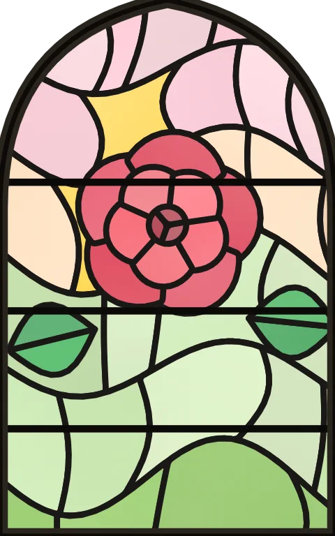

03 · 가치 하나 · Society
움직이는 중세 사회의 축소판
기사부터 농부까지, 신분과 직업이 제각각인 사람들이 한 길을 걷습니다. 여관 주인은 신분 순서대로 이야기를 시키려 하지만, 기사 다음에 술 취한 방앗간 주인이 끼어들면서 그 질서는 금세 무너집니다. 이 작품의 핵심어가 '계층과 삶'인 이유입니다.
II.
The Way
앞에서 들은 여덟 편의 이야기를 떠올리며, 이 작품이 문학사에서 어떤 의미를 갖는지 네 가지로 정리해 봅니다. 그다음 작품이 태어난 시대와, 작품이 끝나는 마지막 장면을 봅니다.
02 · 한 문장으로 말하면
이 작품은 중세 사회 전체를 한 줄로 세워 걷게 했고, 영어를 문학의 언어로 끌어올렸습니다.
이 말에 담긴 네 가지 가치를 한 장씩 넘겨 봅니다.
03 · 가치 하나 · Society
기사부터 농부까지, 신분과 직업이 제각각인 사람들이 한 길을 걷습니다. 여관 주인은 신분 순서대로 이야기를 시키려 하지만, 기사 다음에 술 취한 방앗간 주인이 끼어들면서 그 질서는 금세 무너집니다. 이 작품의 핵심어가 '계층과 삶'인 이유입니다.
03 · 가치 둘 · Language
궁정은 프랑스어, 교회와 학문은 라틴어를 쓰던 시대. 궁정 관리였던 초서는 영어로 썼고, 영어도 문학을 담을 수 있다는 것을 보여 주었습니다. 17세기 시인 존 드라이든은 그를 '영시의 아버지'라 불렀습니다.
03 · 가치 셋 · Frame
'순례'라는 큰 틀 안에 여러 이야기가 들어 있는 액자식 구성. 비슷한 구성의 보카치오 『데카메론』에서는 귀족 남녀 열 명이 이야기를 나누지만, 초서의 순례자들은 신분이 달라 이야기끼리 서로 반박하고 비꼽니다. 이야기 바깥의 다툼까지 작품이 됩니다.

03 · 가치 넷 · Humanity
성경과 성인전, 그리스 신화, 연금술, 음담패설까지. 방대한 이야기들은 결국 한 물음으로 모입니다. 사람은 무엇을 원하고, 무엇 때문에 살아가는가. 사랑, 명예, 탐욕, 신앙. 이야기마다 다른 욕망이 사람의 본성을 비춥니다.
첫 번째 가치였던 '사회의 축소판'을 더 들여다봅시다. 순례자들을 신분별로 나누면 이렇습니다.
04 · 세 신분 · Three Estates
기사 · 기사의 아들 · 기사의 시종
수녀원장 · 수녀와 신부들 · 수도사 · 탁발수사 · 본당 신부 · 소환리 · 면죄부 판매인 · 옥스퍼드 학생
상인 · 법률가 · 지주 · 의사 · 선장 · 바스의 여장부 · 방앗간 주인 · 장원 청지기 · 요리사 · 농부 · 식료품 조달인 · 길드 직공 다섯
상인과 전문직처럼 세 신분에 딱 맞지 않는 사람들이 늘어나던 때였습니다. 이 사람들이 살던 시대를 연표로 봅니다.
05 · 시대 속의 작품 · Timeline
06 · 순례의 끝 · Retraction
연표의 1400년, 초서는 이 작품을 끝내지 못하고 세상을 떠납니다. 그래서 순례자들은 작품 속에서 끝내 캔터베리 대성당에 들어서지 못합니다. 대신 책의 마지막 장은 뜻밖의 장면으로 끝납니다.
Heere taketh the makere of this book his leve.
여기서 이 책을 만든 이가 작별을 고한다
본당 신부의 설교가 끝나자 작가 초서 자신이 나타나, 이 책에 담은 이야기 가운데 '죄로 기우는 것들'에 대해 용서를 구하며 책을 맺습니다. 방앗간 주인의 음담까지 생생히 그려 놓고 마지막에 고개를 숙이는 모습에서, 웃음과 신앙이 함께 있던 중세의 얼굴을 봅니다.
작품이 무엇을 남겼는지 보았으니, 이제 초서가 실제로 쓴 600년 전의 영어를 직접 들여다볼 차례입니다.
Next Station · III The Original 원문의 목소리 ← I. 타바드 여관에서